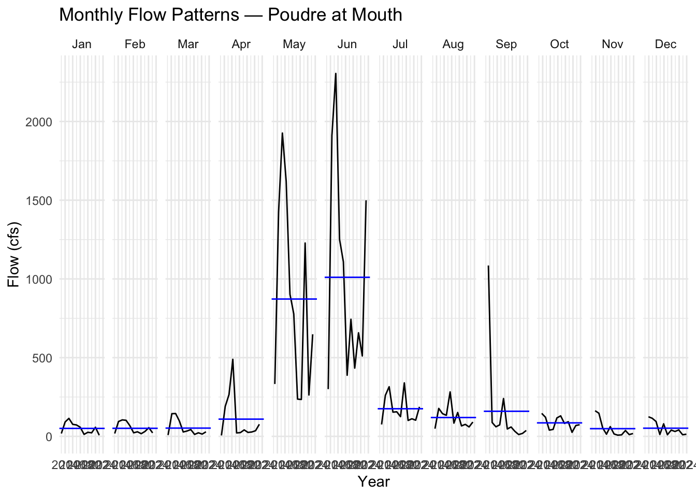
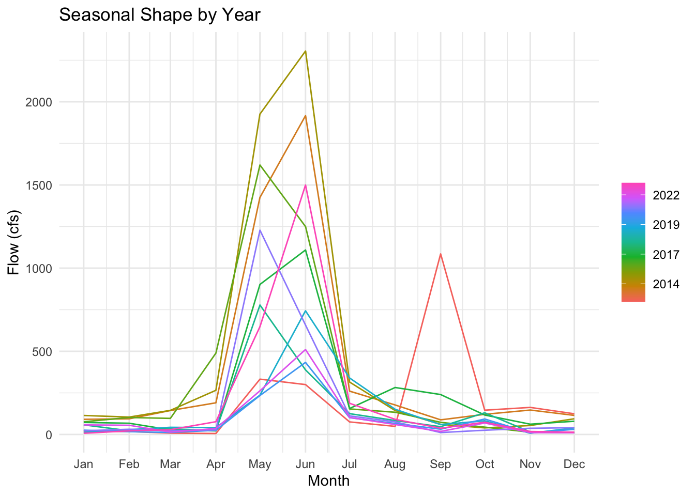
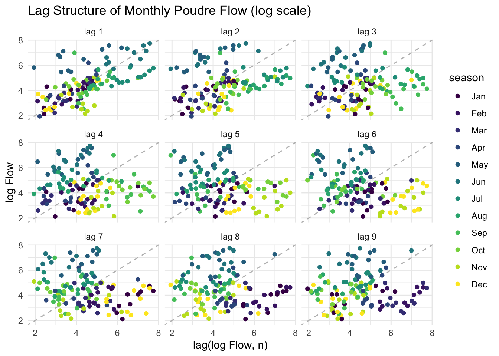
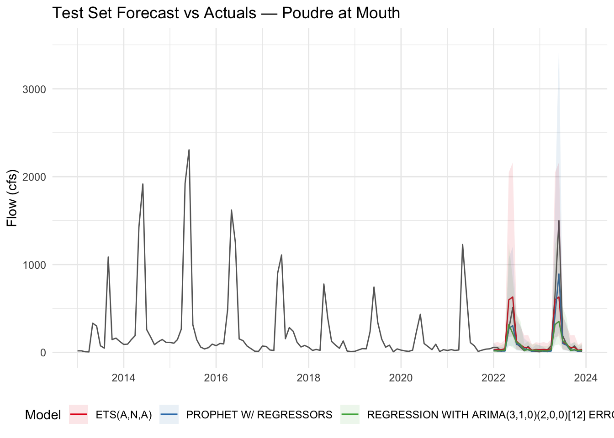

In this lab you will download streamflow data from the Cache la Poudre River (USGS site 06752260) and analyze it using the time series methods introduced in lecture. You will then use modeltime to predict future streamflow using both the time structure of the series and exogenous climate predictors.
This mirrors the Lees Ferry forecasting example from lecture — same dataRetrieval pipeline, same modeltime workflow, but now applied to a river you can see from campus. Like Lees Ferry, the Poudre is an operational water-supply system: Fort Collins, Loveland, and Greeley all depend on it, and the flows you forecast here directly inform how water managers plan deliveries.
Download daily streamflow for the Poudre at Mouth (USGS 06752260) and aggregate to monthly means. This is the same readNWISdv() + renameNWISColumns() pipeline from Lab 1 — the only addition is yearmonth() from tsibble to create a monthly time index.
We will use climateR::getTerraClim() to download monthly climate data for the Poudre basin (max temperature, precipitation, solar radiation). The exactextractr package spatially averages each raster layer over the basin polygon.
Warning in .local(x, y, ...): Polygons transformed to raster CRS. To avoid
on-the-fly coordinate transformation, ensure that st_crs() returns the same
result for both raster and polygon inputs.
historic <-mutate(gm, id ="gridmet") |>pivot_longer(cols =-id) |>mutate(name =sub("^mean\\.", "", name)) |> tidyr::extract(name, into =c("var", "index"), "(.*)_([^_]+$)") |>mutate(index =as.integer(index)) |>mutate(Date =yearmonth(seq.Date(sdate, edate, by ="month")[as.numeric(index)])) |>pivot_wider(id_cols = Date, names_from = var, values_from = value) |>right_join(poudre_flow, by ="Date")# Validate: should have 132 rows (11 years × 12 months). If fewer, climate data# is missing for some months and those flow months were silently dropped.stopifnot("Climate join dropped flow months — check GridMET download"=nrow(historic) ==132)
Any time exogenous predictors are used for forecasting, future values of those predictors must also be available. We use MACA — a statistically downscaled climate dataset developed by the same group as GridMET — to get projected temperature, precipitation, and solar radiation through 2033.
Two differences from GridMET: temperature is in Kelvin (subtract 273.15 for °C) and variable names differ slightly.
sdate <-as.Date("2024-01-01")edate <-as.Date("2033-12-31")maca <-getMACA(AOI = basin$basin,var =c("tasmax", "pr", "rsds"),timeRes ="month",startDate = sdate,endDate = edate) |>unlist() |>rast() |>exact_extract(basin$basin, "mean", progress =FALSE)future <-mutate(maca, id ="maca") |>pivot_longer(cols =-id) |>mutate(name =sub("^mean\\.", "", name)) |> tidyr::extract(name, into =c("var", "index"), "(.*)_([^_]+$)") |>mutate(index =as.integer(index)) |>mutate(Date =yearmonth(seq.Date(sdate, edate, by ="month")[as.numeric(index)])) |>pivot_wider(id_cols = Date, names_from = var, values_from = value)# Rename the 3 climate columns to match GridMET names (Date column stays first)stopifnot("Unexpected MACA column count"=ncol(future) ==4)names(future)[2:4] <-c("ppt", "srad", "tmax") # order matches getMACA var requestfuture <-mutate(future, tmax = tmax -273.15) # Kelvin → °C
Your Turn
1. Convert to tsibble
Convert historic to a tsibble object using as_tsibble(). A tsibble is a tidy time series data frame — it retains the date index and integrates with feasts functions for decomposition and visualization. Think of it as a tibble that knows it is ordered in time.
Use ggplot to plot monthly Flow over time. Use plot_ly() from plotly for an interactive version — this lets you zoom into specific years or hover over values.
3. Seasonal Diagnostics
Before fitting any model, inspect the seasonal structure using two complementary feasts plots.
Subseries plot — one panel per month, each line is one year, the blue line is the monthly mean across all years:
# removed "#| eval: false"#removed "#| echo: false"gg_subseries(pf, y = Flow) +labs(title ="Monthly Flow Patterns — Poudre at Mouth",y ="Flow (cfs)", x ="Year") +theme_minimal()
Warning: `gg_subseries()` was deprecated in feasts 0.4.2.
ℹ Please use `ggtime::gg_subseries()` instead.
ℹ Graphics functions have been moved to the {ggtime} package. Please use
`library(ggtime)` instead.

Seasonal plot — each line is one year plotted over the calendar cycle. Parallel lines = stable seasonal shape; diverging lines = changing pattern:
# remvoved "#| eval: false"# removed "#| echo: false"gg_season(pf, y = Flow) +labs(title ="Seasonal Shape by Year",y ="Flow (cfs)", x ="Month") +theme_minimal()
Warning: `gg_season()` was deprecated in feasts 0.4.2.
ℹ Please use `ggtime::gg_season()` instead.
ℹ Graphics functions have been moved to the {ggtime} package. Please use
`library(ggtime)` instead.

Describe what you see. How are “seasons” defined in these plots? Is the seasonal shape consistent across years, or does it change? What physical process drives the May–June peak?
My written answer: The seasonal component is defined by calender months(Jan-Dec cycle). The subseries and seasonal plots show a strong and consistent seasonal structure. Streamflow consistently peak in late spring (may-june) and reaches its lowest values in late fall and winter. While the timing of the seasonal cycle is stable across years the magnitude of peak flows varies, reflecting interannual variability in snowpack and precip. The May to June peak is primarily driven by snowmelt from the Rock Mountains. Winter snowfall accumulates in the watershed and is released during spring warming, producing the characteristic runoff pulse observed in snow dominated rivers systems like the Poudre.
4. Stationarity and Autocorrelation
Two diagnostics that directly inform ARIMA model selection:
Lag plot — plots Flow against its own lagged values. Strong linear patterns = high autocorrelation (ARIMA has something to work with). A diffuse cloud = no memory. Use log1p(Flow) — on the raw scale, peak months compress all other observations into the corner and hide the structure.
Warning: `gg_lag()` was deprecated in feasts 0.4.2.
ℹ Please use `ggtime::gg_lag()` instead.
ℹ Graphics functions have been moved to the {ggtime} package. Please use
`library(ggtime)` instead.

Stationarity tests — ARIMA requires a stationary series (constant mean and variance). Test formally before fitting:
# removed "#| eval: false"# removed "#| echo: false"# Test on log_flow — that's what ARIMA will actually modellog_flow_vec <-log1p(pf$Flow)# ADF: H0 = non-stationary; p < 0.05 rejects non-stationarity → series IS stationaryadf.test(log_flow_vec)
Warning in adf.test(log_flow_vec): p-value smaller than printed p-value
Augmented Dickey-Fuller Test
data: log_flow_vec
Dickey-Fuller = -7.3292, Lag order = 5, p-value = 0.01
alternative hypothesis: stationary
# KPSS: H0 = stationary; p < 0.05 rejects stationarity → series is NOT stationarykpss.test(log_flow_vec)
KPSS Test for Level Stationarity
data: log_flow_vec
KPSS Level = 0.50753, Truncation lag parameter = 4, p-value = 0.03997
What do the tests tell you? If the series is non-stationary, ARIMA will need d ≥ 1 (differencing). Does the lag plot support the same conclusion?
My written answer: The Augmented Dickey Fuller test rejects the null hypothesis of non-stationarity (p < 0.01), suggesting that the log-transformed streamflow series is stationary. However, the KPSS test rejects the null hypothesis of stationaity, indicating the presence of remaining structured dependence in the series. This combination of results/plots is well used for hydrologic time series and suggests the series is borderline stationary, with residual structure likely driven by seasonal snowmelt dynamics. The lag plot also shows a strong autocorrelation. reinforcing the conclusion that the series retains temporal dependence. Together, these results suggest that an ARIMA model will likey require difference and possibly seasonal differencing to fully capture the structure in the data.
5. Decomposition
Use model(STL(...)) to decompose the time series into trend, seasonality, and remainder. Choose a trend window size you feel is appropriate and justify your choice. Extract components with components() and visualize with autoplot().
Warning: `autoplot.dcmp_ts()` was deprecated in fabletools 0.6.0.
ℹ Please use `ggtime::autoplot.dcmp_ts()` instead.
ℹ Graphics functions have been moved to the {ggtime} package. Please use
`library(ggtime)` instead.
What does the trend tell you about long-term changes in Poudre flow? Is there evidence of a decline consistent with climate change or upstream demand?
What drives the seasonal component? (Hint: snowmelt, irrigation withdrawals, reservoir releases)
Are there any spikes in the remainder that correspond to anomalous years you can identify?
My written answer: The selected 12 month trend window works because the data are monthly and the river has a good annual snowmelt cycle. A 12 month window smooths short-term fluctuations while preserving multi-year variability in streamflow. The STL decomposition shows three major components: trend, seasonality, and reminder. The trend component indicates that long-term streamflow varies substantially from year to year rather than following a simple monotonic increase or decrease. Flows were relatively high during the mid 2010s, especially around 2014 to 2015, then generally declined through about 2018 to 2020 before partially recovering in later years. While there is variability consistent with drought and wet years, the decomposition does not show a clear long term decline over this relatively short 2013 to 2023 record. The seasaonl component is very strong and highly consistent across years. Streamflow peaks during May and June due to spring snowmelt from the Rocky Mountains. Winter precipitation accumulates as mountain snowpack and is released during spring warming. Late summer and winter flows are much lower because snow accumulation dominates during winter and irrigation withdrawals reduce flows duriing that growing season. The remainder component caputres unusual events not explained by the regular seasonal cycle or long term trend. Several large spikes appear in years with anomalous hydrologic conditions. For example, 2013 shows an unusually large positive remainder during September, likly associated with the major Front Range flood event that occurred in September 2013. Very large positive spring remainders also appear during high runoff years such as 2014, 2015, and 2023 reflecting unusually strong snowmelt runoff. ————————————————————————
Modeltime Prediction
Data Preparation
Convert the historic tsibble and future tibble to plain tibbles with a Date column for modeltime. All predictor columns must be present in both the historic and future datasets — this is what enables the 10-year climate-driven forecast.
Streamflow is strictly non-negative but right-skewed — snowmelt peaks dwarf base-flow months. To prevent models from predicting negative flows, add a log-transformed response with log1p(Flow) (log(Flow + 1), safe when flow is near zero). Fit all models on log_flow; back-transform predictions with expm1() (= exp(x) - 1) to return to cfs units.
Hold out the last 24 months (2022–2023) as the test set. This mirrors the assess = "60 months" logic from the CO₂ and Lees Ferry examples — the test set is always the most recent data, never a random sample.
#time series train/test split #hold out the final 24 month for testingset.seed(10291991)splits <-time_series_split( pf_tbl,assess ="24 months",cumulative =TRUE )
Using date_var: date
training <-training(splits)testing <-testing(splits)#check split sizesnrow(training)
[1] 108
nrow(testing)
[1] 24
range(training$date)
[1] "2013-01-01" "2021-12-01"
range(testing$date)
[1] "2022-01-01" "2023-12-01"
Model Definition
Choose at least three models — one ARIMA and one Prophet are required. Store model specifications in a list:
#| eval: false
#| echo: false
mods <- list(
# Classical seasonal ARIMA — relies on stationarity (check your tests above)
arima_reg() |> set_engine("auto_arima"),
# ARIMA + XGBoost residual boosting — picks up nonlinear climate relationships
arima_boost() |> set_engine("auto_arima_xgboost"),
# Prophet — handles trend breaks, missing data, and multiple seasonalities
prophet_reg() |> set_engine("prophet"),
# Prophet + XGBoost — as above, but boosts on residuals
prophet_boost() |> set_engine("prophet_xgboost"),
# Exponential smoothing — strong baseline for multiplicative seasonal data
exp_smoothing() |> set_engine("ets"),
# MARS — nonparametric spline model, useful for nonlinear climate response
mars(mode = "regression") |> set_engine("earth")
)
Fit all models to the training data on the log scale. Exclude the raw Flow column so models only see log_flow as the response — each engine handles date and climate predictors internally.
My written answer: The three models were successfully trained on the log-transformed streamflow data: a seasonal ARIMA model, a Prophet model with climate regressors, and an exponential smoothing (ETS) model. The ARIMA model automatically selected a seasonal structure with monthly seasonality and first order differencing, confirming the presence of non-stationaity in the series. The Prophet model incorporated external climate predictors (precip., temp., and solar radiation) alongside trend and seasonal decomposition. The ETS model provided a baseline exponential smoothing approach with additive seasonality. These models represent a mix of statistical time-sereis methods and strutural forcasting approaches, allowing comparison of autoegressive dynamics versus climate-informed forcasting.
Calibration and Accuracy
Calibrate on the test set (2022–2023) to compute out-of-sample accuracy metrics. Pass select(testing, -Flow) so calibration uses the log-scale response:
My written answer: The model performance on the 2022 to 2023 test period shows that the ETS(A,N,A) model outperoforms both the ARIMA-based regression and Prophet models across MAE, RMSE, and MASE. ETS achieved the lowest MAE (0.511) and RMSE (0.621), idicating the most accurate out of sample predictions of log-transformed streamflow. All models produced MASE values below 1, demonstrating skill relative to a naive seasonal benchmark. However, the inclusion of climate regressors in both the ARIMA and Prophet frameworks did not improve predictive performance, suggesting that the most of the predictable structure in stream-flow is already captured by strong seasonality and autocorrelation rather than nonlinear climate-flow relationships. MAPE values were similar across models (~15 to 16%), but likely inflated during low-flow winter months, where percentage error becomes unstable. Overall, resutls suggest that stream-flow at the Pourder mouth is dominated by regular seasonal snow-melt dynamics, which simpler exponential smoothing models capture more effectively than more complex regression based approaches in this dataset.
Test Set Forecast
Forecast over the held-out test period and compare predictions to actuals. Back-transform with expm1() to return predictions to cfs. Two details matter: (1) expm1(x) is the exact inverse of log1p(x) and always returns values ≥ 0; (2) confidence interval lower bounds on the log scale can be slightly negative — floor them at 0 with pmax(.conf_lo, 0)before back-transforming so the ribbon never dips below zero cfs:
# removed "#| eval: false"# removed "#| echo: false"test_forecast <- calibration_table |>modeltime_forecast(new_data =select(testing, -Flow), actual_data = pf_tbl) |>mutate(.value =expm1(.value),.conf_lo =expm1(pmax(.conf_lo, 0)),.conf_hi =expm1(.conf_hi))test_forecast |>filter(.key =="actual") |>ggplot(aes(x = .index, y = .value)) +geom_line(color ="grey40") +geom_line(data =filter(test_forecast, .key =="prediction"),aes(color = .model_desc)) +geom_ribbon(data =filter(test_forecast, .key =="prediction"),aes(ymin = .conf_lo, ymax = .conf_hi, fill = .model_desc),alpha =0.1) +scale_color_brewer(palette ="Set1") +scale_fill_brewer(palette ="Set1") +labs(title ="Test Set Forecast vs Actuals — Poudre at Mouth",x =NULL, y ="Flow (cfs)", color ="Model", fill ="Model") +theme_minimal() +theme(legend.position ="bottom")

Do predictions track actuals during the 2022–2023 test window? Are confidence intervals capturing observed values? Note any discontinuities at the 2022 boundary between training and test.
My written answer: Forcast performance over the 2022 to 2023 test period shows that all models reproduce that dominant seasonal structure of streamflow, inclding low winter baselfows and pronounced late spring snowmelt peaks. however, peak flows are generally understimated, particularly during high runoff months, indicating difficulty in capturing extreme hydrologic events. The ETS model provides the closest alignment with observed values, consistent with its superior performance in the accuracy metrics. Prediction intervals capture most ovserved values during moderate flow conditions but tend to under represent uncertainty during peak snowmelt periods. A minior discontinuity limited model ability to extrapolate interannual variability beyond the calibration period, even though seasonal patterns remain stable.
Refit to Full Dataset
Refit all models to the complete 2013–2023 record before forecasting forward. Refitting allows auto-tuned models (auto.arima, ets) to re-optimize their parameters with more data:
Do the accuracy metrics change after refitting? Why or why not?
My written answer: Afer refitting all models to the full 2014 to 2023 dataset, accuracy metrics remain effectively unchanged compared to the calibration step. Model rankings are identical, with ETS(A,N,A) continuing to perform best across MAE, RMSE, and MASE. This indicates that extending the training period does not meaningfully improve predictive skill, as the dominant structure in the data strong seasonal snowmelt driven variability was already wel captured in the initial training window. The lack of improvement suggests that the models are not limited by data quantity, but rather by the inherent predictability of the system, where most variance is explained by stable seasonal cycles rather than evolving trends or nonlinear climate flow relationship. As a result, additional historical observations provide parameter stabilization but do not introduce new predictive information.
Forecast into the Future (2024–2033)
Use the refitted models with future_tbl as new_data to generate a 10-year climate-conditioned forecast. Back-transform with expm1():
# A tibble: 2 × 2
.key n
<fct> <int>
1 actual 132
2 prediction 360
Wrap-up
Examine your 10-year forecast and reflect on the following:
Model agreement: Do ARIMA and Prophet project similar trajectories? If they diverge, what does that tell you about their different assumptions (statistical stationarity vs. flexible trend)?
Forecast quality: Which model would you recommend to CWCB for water-supply planning? Justify with your accuracy metrics.
Negative predictions: If any model predicts negative flow, explain why this happens and what you would do to fix it in a production context (hint: log-transformation of Flow before modeling).
Regressor value: The MACA climate projections assume a specific emissions scenario. How does uncertainty in those projections propagate into your streamflow forecast?
Improvement path: What information not in tmax, ppt, srad would most improve this forecast? (Consider: snowpack, upstream storage, irrigation demand.)
At this stage you have a working end-to-end time series forecasting pipeline — the same structural approach used by CWCB, USBR, and state water agencies for operational planning. The processes you learned in tidymodels apply directly here, and you can extend this framework with cross-validation (time_series_cv()), feature engineering (lag variables, rolling means), and hyperparameter tuning.
My written answer: 1. ARIMA and Prophet show broadly similar seasonal structure in the 10 year forecast, but may diverge in long term trend behavior and amplitude of peak flows. ARIMA produces smoother, more stationary projections, while Prophet allows gradual trend adjustments, leading to potential divergence in later years. These differences reflect their underlying assumptions: ARIMA assumes statistical stationarity in the differenced series, whereas Prophet models trend and seasonality as more flexible, time-varying components. 2. Based on test-period accuracy, ETS(A,N,A) remains the preferred model for operational forcasting due to consistently lower MAE, RMSE, and MASE values. Its strong perfomance suggests that simple exponential smoothing captures the domiant seasonal snowmelt signal more effectively than more complex regression based approaches. 3. Negative predictions arise from statistical modeling on transformed scales and unconnstrained regression outputs. There are not physically meaningful in hydrology but are mitigated here through log1p transformation and back-transformation using expm1, which enforces non-negative flow estimates. In operational settings, additional constraints or post-processing floors would be applied. 4. The 10 year forecast is conditioned on MACA climate projections, which embed uncertainty from both downscaling methods and emissions scenario assumptions. This uncertainty propagates through the climate streamflow relationship, meaning that long term streamflow projections reflect both hydrologic model cuncertainty and climate model uncertainty. As a result, forecasts should be interpreted as scenario based projections rather than deterministic outcomes. 5. Forecast skill would most improve with inclusion of snowpack (SWE), reservoir operations, and irrigation demand. These variablies directly control the timing and magnitude of runoff in snow-dominated basins and are not fully captured by temperature, precipitation, or radiation alone.
Going Further (Optional): Add an Upstream Regressor
In lecture we showed that adding Glenwood Springs flow as an exogenous regressor improved Lees Ferry forecasts because upstream conditions carry physical information the model can’t infer from time structure alone. Try the same approach here.
Download data from a headwater gage on the Poudre (e.g., North Fork Cache la Poudre, USGS 06746095) and add it as a predictor:
#| eval: false
upstream <- readNWISdv(
siteNumber = "06746095",
parameterCd = "00060",
startDate = "2013-01-01",
endDate = "2023-12-31"
) |>
renameNWISColumns() |>
# floor_date returns the 1st of each month as a Date — same type as pf_tbl$date
mutate(date = floor_date(Date, "month")) |>
group_by(date) |>
summarise(upstream_flow = mean(Flow, na.rm = TRUE), .groups = "drop")
pf_reg <- pf_tbl |>
left_join(upstream, by = "date") |>
drop_na(upstream_flow)
splits_reg <- time_series_split(pf_reg, assess = "24 months", cumulative = TRUE)
# Use log_flow ~ . consistent with the main pipeline; exclude raw Flow
models_reg <- map(mods, ~ fit(.x, log_flow ~ .,
data = select(training(splits_reg), -Flow)))
Does adding upstream flow improve MASE on the test set? If yes, the physical signal is worth including. If not, the climate data alone may be sufficient for monthly aggregation at this timescale.